Евдокимов Максим Михайлович. Группа - НФИмд-01-24.
26 сентябрь, 2024, Москва, Россия
Цели и задачи работы
Цель лабораторной работы
Изучить способы шифрования методом перестановки разного типа.
Задание
Реализовать метод Маршрутного шифрования.
Реализовать метод шифрования с помощью решеток.
Реализовать метод шифрования через таблицу Виженера.
Теоретическое введение
Маршрутное шифрование
Маршрутное шифрование (также известное как маршрутное
транспонирование) — это метод шифрования, при котором открытый текст
записывается в матрицу (таблицу) по определенному маршруту, а затем
считывается по другому маршруту для получения шифрованного текста.
Основная идея заключается в изменении порядка символов в соответствии с
заданным маршрутом.
Алгоритм действий
маршрутного шифрования:
Выбор матрицы и маршрутов
Размер матрицы: Определите размер матрицы n.
Маршрут записи: Определите маршрут, по которому будут записываться
символы открытого текста в матрицу.
Маршрут считывания: Определите маршрут, по которому будут
считываться символы из матрицы для получения шифрованного текста.
Запись открытого текста в матрицу
Заполнение матрицы: Запишите символы открытого текста в матрицу по
выбранному маршруту записи. Если текст короче, чем размер матрицы, можно
добавить фиктивные символы (могут быть технически любым).
Считывание шифрованного текста
Считывание матрицы: Считайте символы из матрицы по выбранному
маршруту считывания. Результат будет шифрованным текстом.
Дешифрование
Запись шифрованного текста в матрицу: Запишите символы шифрованного
текста в матрицу по маршруту считывания.
Считывание открытого текста: Считайте символы из матрицы по маршруту
записи. Результат будет открытым текстом.
Шифрование с помощью решеток
Шифрование с помощью решёток (также известное как “шифр Кардано”) -
это метод криптографии, основанный на использовании специальной
трафаретной маски, называемой “решёткой”.
Алгоритм
действий Шифрование с помощью решеток
Создание решёток:
Решётка для шифрования (E-решётка):
Это квадратная матрица размером NxN клеток (обычно 4x4, 6x6 или 8x8).
В некоторых клетках матрицы проделаны отверстия. Отверстия расположены
таким образом, что при повороте решётки на 90 градусов, 180 градусов и
270 градусов, они не совпадают с предыдущими положениями. За один полный
оборот решётки (360 градусов) отверстия проходят через все клетки
матрицы.
Решётка для расшифровки (D-решётка):
Это также квадратная матрица размером NxN клеток. Отверстия в
D-решётке расположены таким образом, чтобы при наложении на E-решётку в
определённом положении, отверстия совпадали с теми клетками, в которые
были записаны символы.
Запись сообщения:
E-решётка накладывается на чистый лист бумаги.
Сообщение записывается в отверстия E-решётки.
Затем E-решётка поворачивается на 90 градусов и сообщение продолжает
записываться в следующие отверстия.
Процесс повторяется до тех пор, пока E-решётка не будет повернута на
360 градусов.
В результате на листе бумаги остаётся зашифрованное сообщение,
состоящее из символов, расположенных в случайном порядке.
Расшифровка сообщения:
D-решётка накладывается на зашифрованное сообщение в определённом
положении. Символы, расположенные в отверстиях D-решётки, читаются и
записываются.
Затем D-решётка поворачивается на 90 градусов и процесс
повторяется.
Процесс повторяется до тех пор, пока D-решётка не будет повернута на
360 градусов.
В результате будет прочитано исходное сообщение.
Шифрование через таблицу
Виженера
Таблица Виженера (также известная как шифр Виженера) - это метод
полиалфавитного шифрования, который использует ключевое слово для сдвига
букв исходного текста на разные позиции в алфавите. Это делает шифр
более стойким, чем простые моноалфавитные шифры, такие как шифр
Цезаря.
Алгоритм действий
для метода таблицу Виженера
Таблица Виженера:
Таблица Виженера представляет собой квадратную матрицу, состоящую из
26 строк и 26 столбцов.
Каждая строка соответствует сдвигу алфавита на определённое
количество позиций. Например, первая строка - это обычный алфавит,
вторая строка - алфавит со сдвигом на 1 позицию, третья строка - со
сдвигом на 2 позиции и так далее.
Ключевое слово:
Ключевое слово - это слово или фраза, которая используется для
шифрования сообщения.
Длина ключевого слова должна быть не меньше длины сообщения.
Если ключевое слово короче, оно повторяется до тех пор, пока не
достигнет нужной длины.
Шифрование:
Для каждой буквы исходного текста находится соответствующая буква
ключевого слова.
В таблице Виженера находится пересечение строки, соответствующей
букве исходного текста, и столбца, соответствующего букве ключевого
слова.
Буква на пересечении этих строки и столбца является зашифрованной
буквой.
Расшифровка:
Для расшифровки используется то же ключевое слово.
Для каждой буквы зашифрованного текста находится соответствующая
буква ключевого слова.
В таблице Виженера находится строка, соответствующая букве ключевого
слова.
В этой строке находится буква, соответствующая зашифрованной букве.
Эта буква является исходной буквой.
Ход работы
Задание 1
Создание кода для маршрутного шифрования:
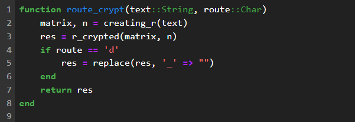
Основная функция маршрутного
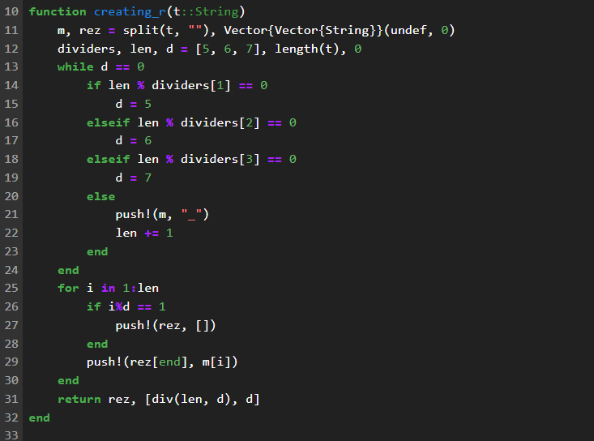
Создание матрицы маршрутного
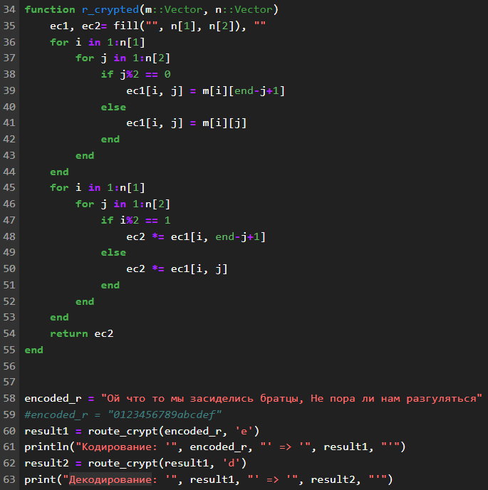
Вызов и вывод и функция маршрутного
шифрования
Результат 1
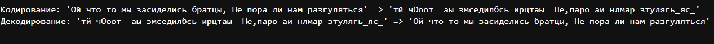
Результат Маршрутного шифра
Задание 2
Создание кода для шифра с помощью решеток:
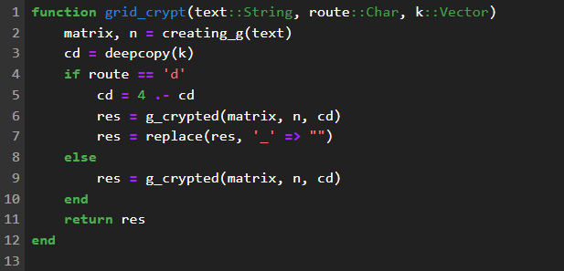
Основная функция решеток
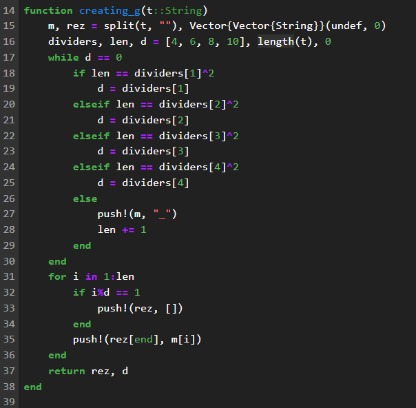
Создание матрицы решетокВызов и вывод и функция шифрования с
помощью решеток
Результат 2
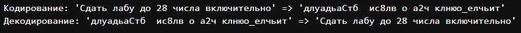
Результат шифра Решётки
Задание 3
Создание кода для шифрования через таблицу Виженера:
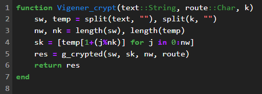
Основная функция Виженера
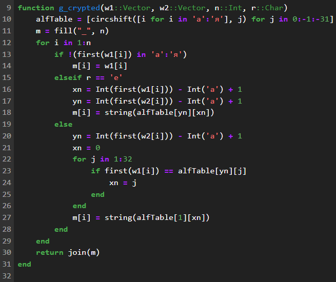
функция шифрования через таблицу
Виженера
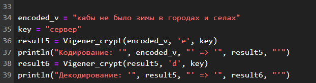
Вызов и вывод шифра
Результат 3
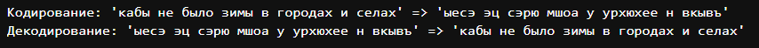
Результат шифра Виженера
Выводы по проделанной работе
Вывод
В ходе выполнения лабораторной работы я изучил представленные 3 вида
шифра перестановки: Маршрутное шифрование, Шифрование с помощью решеток
и таблица Вижинера. А также реализовал на языке программирования Julia
методы шифрования и дешифрования для каждого шифра.